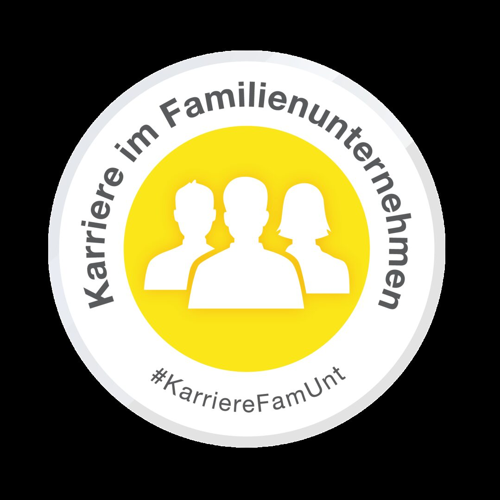
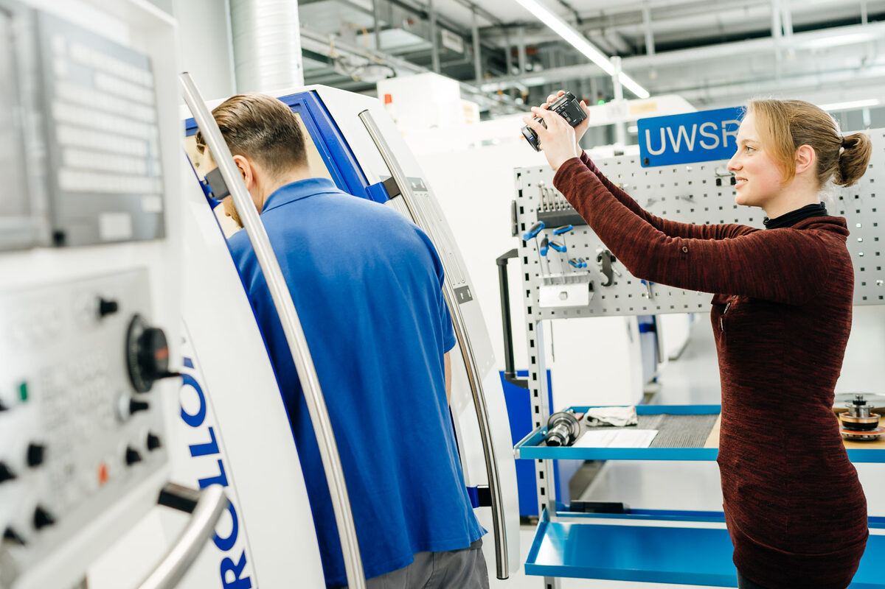
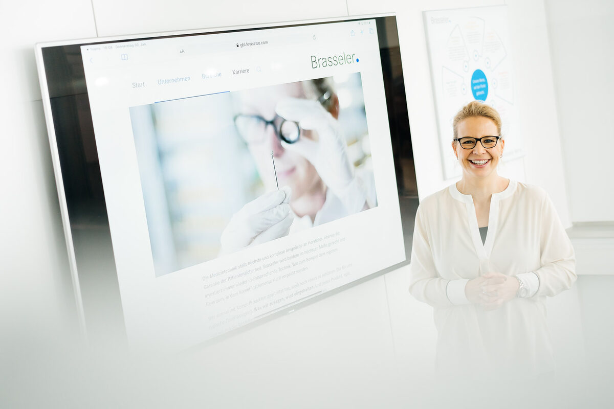
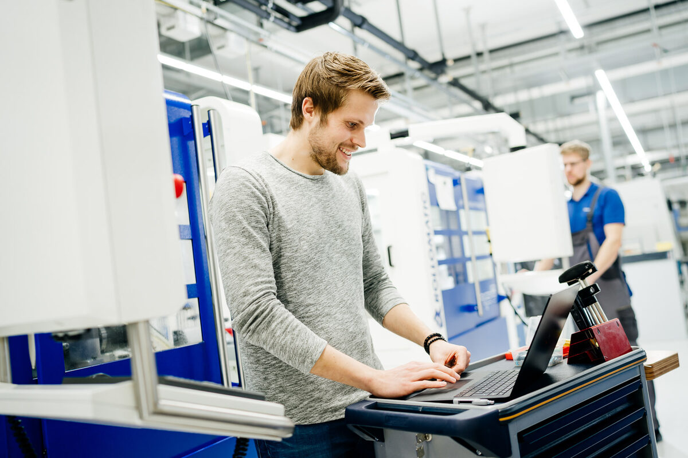
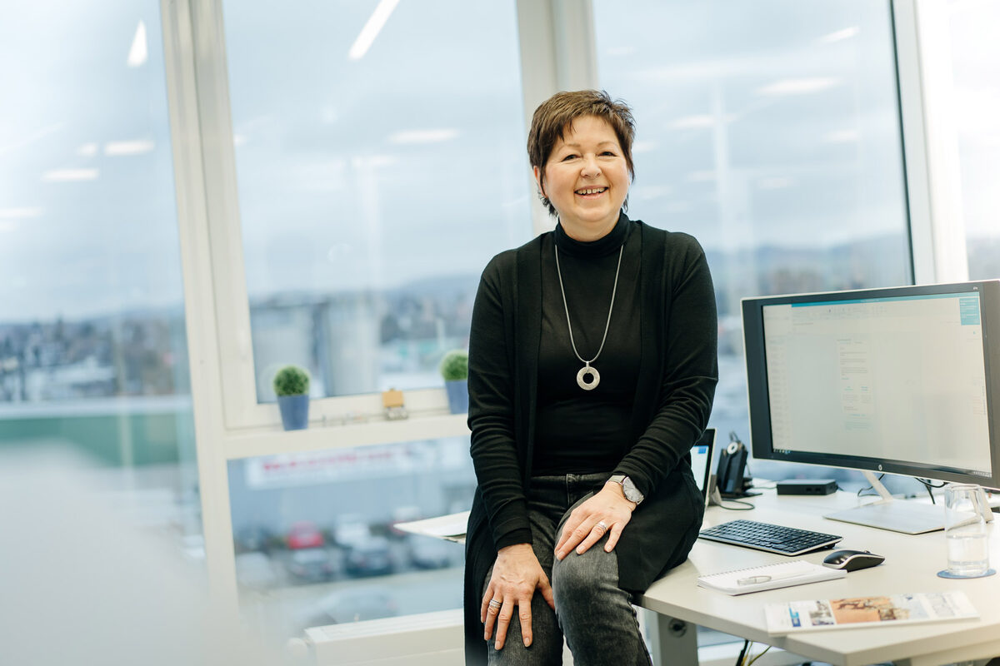
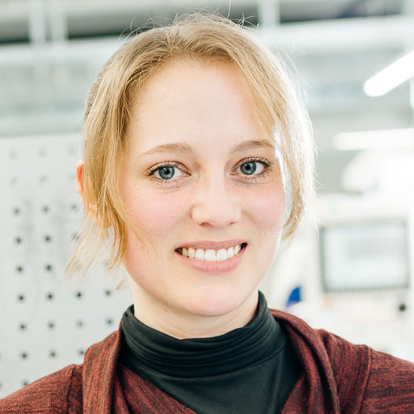
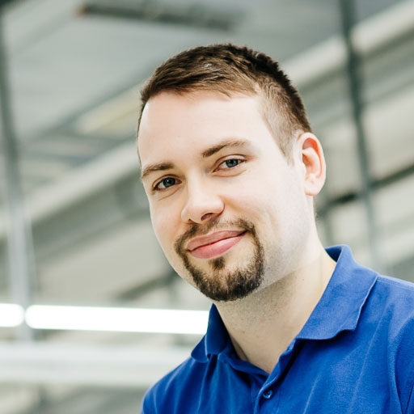
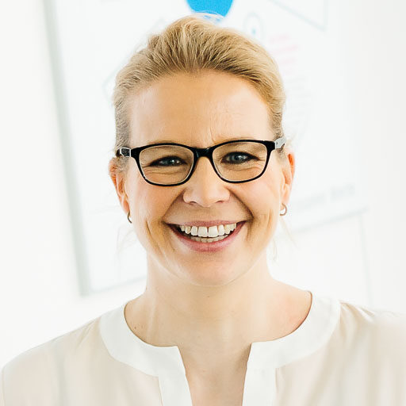

Karriere machen, Mensch bleiben.
Was wir tun, das machen wir richtig.
Und wir machen eine ganze Menge, damit sich jeder unserer Kollegen bei Brasseler wohl und ernstgenommen fühlt. Vom Azubi bis zum Geschäftsführer. Tag für Tag.
Natürlich liegt es in unserem unternehmerischen Interesse, dass bei uns hoch motivierte Menschen arbeiten. Gut ausgebildete Mitarbeiter, die mit ihrem Engagement dafür sorgen, dass Brasseler erfolgreich ist. Heute und in Zukunft.
Es steckt auch etwas sehr Traditionelles dahinter. Etwas, das sich heute nur noch wenige Unternehmen leisten: Werte, an die wir glauben. Und dazu gehört auch die Verantwortung, die wir gegenüber unseren Mitarbeitern haben.

Mit dem Siegel „Karriere im Familienunternehmen“ positionieren wir uns als familiengeführtes Unternehmen, das auf einen persönlichen und engen Kontakt zu seinen Mitarbeitern großen Wert legt. Zugleich bieten wir zahlreiche Chancen für die Weiterentwicklung jedes Einzelnen. Unsere Werte als traditionsreiches und modernes Familienunternehmen werden auf allen Karrierestufen gelebt und lassen uns gemeinsam wachsen.
Wer bei Brasseler angekommen ist, der bleibt: Werden auch Sie Teil unserer Erfolgsgeschichte.
Typisch Brasseler.
Leistungen für unsere Mitarbeiter.
 Flexible Arbeitszeiten
Flexible Arbeitszeiten Home Office
Home Office Betriebsrestaurant
Betriebsrestaurant Weiterbildung
Weiterbildung Kinderbetreuung
Kinderbetreuung Gesundheitsmaßnahmen
Gesundheitsmaßnahmen Betriebliche Krankenversicherung
Betriebliche Krankenversicherung Gute Verkehrsanbindung
Gute Verkehrsanbindung Mitarbeiterrabatte
Mitarbeiterrabatte Betriebsevents
Betriebsevents Sportaktionen
Sportaktionen Heiratsbonus
Heiratsbonus Nachwuchsbonus
Nachwuchsbonus Familien-Service
Familien-Service Nachwuchsförderung
Nachwuchsförderung Führungskräfteentwicklung
Führungskräfteentwicklung Betriebliches Vorschlagswesen
Betriebliches Vorschlagswesen Ergonomische Arbeitsplätze
Ergonomische Arbeitsplätze
Ganz persönlich:
Erfahrungen bei Brasseler.
Die Menschen bei Brasseler sind so vielfältig wie die beruflichen Möglichkeiten und Herausforderungen, die wir Ihnen bieten. Hier sind ein paar unserer Mitarbeiter, die Ihnen über ihre ganz persönliche Erfahrung erzählen. Vielleicht sind es ja Erfahrungen, die Sie auch bald bei uns machen können.




OWL.
Hier sind Ihre Möglichkeiten zuhause.
Wer bei Ostwestfalen-Lippe an grüne Wiesen, den Teutoburger Wald, historische kleine Städte und Naherholung denkt, liegt nicht völlig falsch. Stimmt alles, aber was man auch wissen muss: OWL ist gleichzeitig eine der stärksten deutschen Wirtschaftsregionen mit über einer Million Beschäftigten und einem Bruttoinlandsprodukt von über 60 Mrd. Euro pro Jahr. Und genau diese Mischung macht Ostwestfalen-Lippe so besonders.
Traditioneller erfolgreicher Mittelstand, Forschung und Hightech Unternehmen, Hochschulen und Unis. Wer hier arbeiten oder studieren möchte, hat eine ungewöhnlich große Auswahl. Wer Stadtluft braucht, ist in ein paar Minuten in Bielefeld. Wer für sich und seine Familie Ruhe und Natur bevorzugt, der findet in Lippe sofort seinen Platz. Eines haben sie alle gemeinsam: wer einmal in OWL war, der möchte nicht mehr weg.
Gegenseitiges Kennenlernen während des Studiums ermöglicht einen angenehmen Start in den Beruf.
Da ich sehr heimatverbunden und sportlich aktiv bin, habe ich ein Unternehmen gesucht, welches sich für die Region stark macht und im sportlichen Sektor engagiert ist. Aus Erzählungen von Freunden und Bekannten, stellte sich Brasseler als familienorientiertes, arbeitnehmerfreundliches Unternehmen dar. Nach meinem Werkspraktikum stand eins fest: Ich möchte bei Brasseler arbeiten. Auch als Frau wurde ich hier bei Brasseler in einem technischen Arbeitsgebiet mit „Blaumann“ ernst genommen und durch die Kollegen motiviert, an z. B. den Maschinenumbauten mitzuwirken. Hilfsbereitschaft und Unterstützung der Kollegen wird hier großgeschrieben.
Schon während meines Studiums lernte ich das Unternehmen bei meinen Abschlussarbeiten kennen, denn sowohl meine Bachelor- als auch Masterarbeit habe ich in Kooperation mit Brasseler geschrieben. Dabei wird Wert auf eigenständiges Arbeiten gelegt. Jedoch standen mir die Spezialisten immer zur Seite und ich knüpfte schnell Kontakte. Die Zusammenarbeit während der studentischen Tätigkeiten hatte den Vorteil des gegenseitigen Kennenlernens. Diese haben mir einen angenehmen Einstieg in mein Berufsleben ermöglicht.
Meine Kollegen sind ein großer Faktor, weshalb ich gerne bei Brasseler arbeite. Zudem ist die Zusammensetzung meines Jobs das, was mich glücklich macht. Es handelt sich nämlich um keinen reinen Büro-Job. Ich bin viel in der Produktion unterwegs, arbeite mit den Fertigungsbereichen zusammen und stehe im regen Austausch mit den Kollegen vor Ort. Meine Aufgaben sind daher interessant und abwechslungsreich.
Wenn du Brasseler mit drei Worten beschreiben müsstest, welche wären es?
Zusammenhalt, Freundschaften, Flexibilität

Karolin Blum
Brasseler bietet eine Perspektive.
Bei der Suche nach einem Ausbildungsbetrieb fiel meine Entscheidung auf Brasseler. Tatsächlich hätte ich auch zu einer anderen Firma gehen können, habe mich dann für GBL entschieden, weil der Eindruck und das Feeling hier besser waren. Auch ein neutraler Ratgeber hat mir empfohlen, zu Brasseler zu gehen – eine goldrichtige Entscheidung!
Nach Abschluss meiner Ausbildung und den ersten Schritten im Berufsleben habe ich mich zum Betriebswirt weitergebildet. Der erfolgreiche Abschluss hat mir neue Wege geöffnet. Nach einigen Jahren in der Tätigkeit als Kundenbetreuer in der noch jungen Business Unit Medical folgte schließlich der Wechsel zum Strategischen Einkauf für Rohstoffe und Handelswaren. Eine neue Aufgabe mit neuen Herausforderungen, Begegnungen und wertvollen Erfahrungen. Ich durfte über die letzten Jahre viele Firmen und Unternehmen in ganz Europa kennenlernen, Verhandlungen führen, und habe bei Lieferanten-Audits Erfahrungen gesammelt. Nach knapp 9 Jahren in dieser Funktion darf ich seit Juli 2019 das Einkaufs-Team leiten. Auch diese Aufgabe bringt viele neue Herausforderungen mit sich, denen ich mich gerne stelle.
Bei Brasseler merkt man nach wie vor, dass wir ein Familienunternehmen sind – im positiven Sinn! Wir denken nicht (nur) von Monat zu Monat oder Quartal zu Quartal, sondern auch darüber hinaus – in allen Ebenen. Somit bietet Brasseler eine verlässliche Perspektive und ein Umfeld, in dem Arbeiten Sinn ergibt.
Wenn du Brasseler mit drei Worten beschreiben müsstest, welche wären es?
familiär, zukunftsorientiert, anspruchsvoll
Sven Brakhage
Verständnis und Entgegenkommen sind bei Brasseler selbstverständlich.
Ich habe Brasseler als zuverlässigen Arbeitgeber ihm Rahmen meines Studiums kennengelernt. Dabei hat sich Brasseler immer offen und positiv im Umgang mit seinen Mitarbeitern gezeigt und es vorbildlich gelebt.
Als Mutter von 3 Kindern habe ich es immer als Bereicherung empfunden, dass mein Arbeitgeber mir auch in den Elternzeiten die Möglichkeit gegeben hat, in Teilzeit arbeiten zu können. Durch flexible Arbeitszeiten, die ich teilweise im Homeoffice erledige, habe ich die Möglichkeit beiden mir wichtigen Lebensbereichen gerecht zu werden. Auch wenn sich kurzfristig Situationen ergeben, die Flexibilität verlangen, trifft man auf Verständnis und Entgegenkommen bei Kollegen und Vorgesetzten.
Dies bietet mir einen unheimlichen Mehrwert für mein privates und berufliches Umfeld. Der kollegiale und menschliche Umgang miteinander im Unternehmen gehören ebenfalls dazu.
Wenn du Brasseler mit drei Worten beschreiben müsstest, welche wären es?
Zuverlässigkeit, Teamwork, Familien(freundliches)unternehmen
Stephanie Engelke
Jeder trägt etwas dazu bei: Gesellschafterfamilie, Geschäftsleitung und jeder Einzelne.
Als es damals darum ging einen Ausbildungsplatz zu suchen, fiel mir die Entscheidung nicht schwer. Brasseler galt damals und gilt heute immer noch als Vorzeigeunternehmen der Region. Also habe ich mich beworben, in der Hoffnung einen der begehrten Ausbildungsplätze zu bekommen, was sich dann auch erfüllte.
Nach meiner Ausbildung zum Industriemechaniker habe ich ein paar Jahre in der Produktion gearbeitet und habe anschließend den Industriemeister Metall begonnen und erfolgreich abgeschlossen.
Kurz nach meinem Meisterabschluss habe ich die Gruppenleiterstelle angetreten. Zeitgleich mit der neuen Stelle wurde mir firmenseitig ein Führungskräfte-Entwicklungs-Programm an einer externen Hochschule angeboten und natürlich habe ich dazu sofort zugesagt.
Das Entwicklungs-Programm zielt vor allem auf das Selbstverständnis als Führungskraft und die eigene Persönlichkeitsentwicklung ab. In den persönlichen Coachings wurde dabei noch jeder Teilnehmer individuell gefördert. Das Programm hat mich auf jeden Fall beruflich, wie privat nach vorne gebracht und geholfen meinen „Führungsstil“ zu entwickeln.
Ich habe in Brasseler einen starken Arbeitgeber gefunden, der mir und meinen Kollegen ein sicheres und angenehmes Arbeitsumfeld bietet. Hier wird noch für jeden Einzelnen versucht die bestmögliche Lösung zwischen Privatleben und Beruf zu finden. Auch von externen Besuchern wird immer wieder bestätigt, dass wir ein hervorragendes Betriebsklima haben. Daran haben alle ihren Anteil: Gesellschafterfamilie, Geschäftsleitung, Betriebsrat und jeder einzelne Mitarbeiter!
Wenn du Brasseler mit drei Worten beschreiben müsstest, welche wären es?
Bodenständig, fair und engagiert

Oliver Holzkämper
Jeder Tag hält etwas Neues bereit.
Gebr. Brasseler stand zu Beginn meiner Ausbildung sowie heute für eine ausgezeichnete Ausbildung und hat hier in der Region einen super Ruf als Arbeitgeber. Für Brasseler habe ich damals Termine bei anderen Firmen abgesagt. Meine Entscheidung für Brasseler fiel unter anderem durch die Perspektive, sich weiterzubilden und beruflich weiterzuentwickeln.
Ende meiner Ausbildung wurde ich als Maschineneinrichter an CNC-Dreh-Fräszentren eingesetzt. Anschließend erlernte ich weitere Maschinen und Steuerungen, sodass ich die Stelle des Springers einnehmen konnte und im ganzen Maschinenpark einsetzbar war. Durch die vielseitigen Kenntnisse aus der Arbeit des Springers, folgte daraufhin eine interne Weiterbildung zum CAM-Programmierer. Außerdem begann ich kurz nach der Ausbildung parallel zu meinem Beruf eine Weiterbildung zum Maschinebautechniker in Form eines Fernstudiums. Nach erfolgreichem Abschluss wurde ich auf meine jetzige Stelle als Sachbearbeiter im Bereich Fertigungstechnologie versetzt und bin spezialisiert auf den CAD-/CAM-Prozess in der Fertigung und die Digitalisierung der Fertigungsbereiche. Diese Stelle ermöglicht mir neben der Bürotätigkeit auch weiterhin viel Kontakt zur Fertigung, was mir sehr wichtig ist. Auch jetzt bilde ich mich neben meinem Beruf weiter und absolviere ein Bachelor-Fernstudium im Bereich „Digital Engineering – Digitale Fertigung und angewandte Informatik“
Ich arbeite gerne bei Brasseler, weil jeder Tag etwas Neues bereithält. Hinzu kommt die zukunftsorientierte Ausrichtung des Unternehmens. Sowohl in der Produktion als auch in den Office-Bereichen, werden viele Projekte und Thematiken, bei denen ich eingebunden bin, umgesetzt, um die Produktion stätig zu verbessern. Dazu kommt das sehr gute Verhältnis zu meinen Kollegen und allen anderen Mitarbeitern, mit denen man tagtäglich zu tun hat.
Wenn du Brasseler mit drei Worten beschreiben müsstest, welche wären es?
Zukunftsorientiert, Mitarbeiterfreundlich, Sicherheit
Fabien Dankwerth
Eine starke Verbindung die über die Jahre immer gleich geblieben ist.
Brasseler suchte eine Mitarbeiterin für die EDV-Sachbearbeitung. Für mich, Lemgoerin und gelernte Einzelhandelskauffrau, war die Zusage von dem regional angesehenen Industrie- und Familienunternehmen wie ein Sechser im Lotto.
Eingestellt wurde ich vor ca. 40 Jahren, wie gesagt, als EDV-Sachbearbeiterin. Hier war ich für die Auftragserfassung aller Aufträge des Außendiensts, telefonisch erteilten Aufträgen, Faxen, Briefbestellungen und für die Gutschrifterstellung zuständig. Nach einigen Produktschulungen und Weiterbildungen bin ich für die Mitgliederverwaltung der Einkaufsgruppen und deren monatlichen Abrechnungen und Bonusabrechnungen verantwortlich. Außerdem betreue ich die Bundeswehr-Apotheken und die dazugehörigen Zahnarztgruppen. Alle zwei Jahre unterstütze ich das Messeteam bei der Durchführung der IDS.
Über die ganzen Jahre hat sich eins nicht geändert: Meine Freude an dem Umgang mit den Kunden und die Zusammenarbeit in einem kollegialen, freundschaftlichen Team. Brasseler bietet mir einen sicheren Arbeitsplatz, in einem familiären geprägten Umfeld und somit Grundlage für ein sorgenfreies Leben.
Wenn du Brasseler mit drei Worten beschreiben müsstest, welche wären es?
Modern, bodenständig, familiär
Karin Wehmeier
Jeder wird freundlich aufgenommen und man fühlt sich schnell wohl.
Ich habe mich für Brasseler entschieden, da meine Stelle eine spannende inhaltliche Herausforderung für mich ist und ich gerne in einem Familienunternehmen arbeiten wollte. Durch die Möglichkeit in Teilzeit zu arbeiten, lässt sich der Beruf mit der Familie bestens vereinbaren.
Meine Einarbeitung verlief sehr professionell, da es einen strukturierten und individuellen Einarbeitungsplan gab. Von den Kollegen wurde ich sehr freundlich aufgenommen und somit wurde es mir leicht gemacht, mich schnell wohl und aufgenommen zu fühlen.
Bei Brasseler habe ich tolle Kollegen und ein nahbares Management. Ich schätze die schnellen Entscheidungswege und mag den intensiven Austausch von Themen im Rahmen der Sonderprojekte. Und all dies lässt sich mit meiner Teilzeitarbeit super vereinbaren. Die zusätzlichen flexiblen Arbeitszeiten machen die Arbeitsbedingungen noch attraktiver. Und die Möglichkeit zum mobilen Arbeiten runden es zusätzlich ab.
Wenn du Brasseler mit drei Worten beschreiben müsstest, welche wären es?
Innovativ, marktführend, überzeugend

Kristina Durst
Häufige Fragen
Welche Einstiegsmöglichkeiten gibt es bei Brasseler?
Ausbildung in technischen und kaufmännischen Berufen, Praktika, Werkstudententätigkeit und Abschlussarbeiten für Studierende sowie Stellenangebote für Berufserfahrene am Standort Lemgo.
Welche Leistungen bietet Brasseler seinen Mitarbeitenden?
Unter anderem flexible Arbeitszeiten, Home-Office, Betriebsrestaurant, Weiterbildung, Kinderbetreuung, Gesundheitsmaßnahmen, Mitarbeiterrabatte, Betriebsevents und ein betriebliches Vorschlagswesen.
Wo arbeitet man bei Brasseler?
Am Firmensitz in Lemgo in Ostwestfalen-Lippe, dem einzigen Produktionsstandort, an dem rund 1.200 der weltweit 1.500 Mitarbeitenden tätig sind.
Wie bewirbt man sich bei Brasseler?
Über das Karriereportal karriere.brasseler.de mit den aktuellen Stellenangeboten; Studierende und Absolventen finden dort auch Abschlussarbeiten und Praktika.